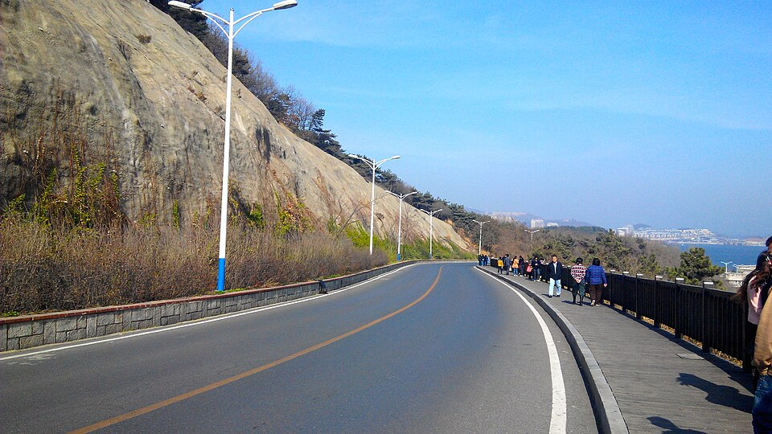
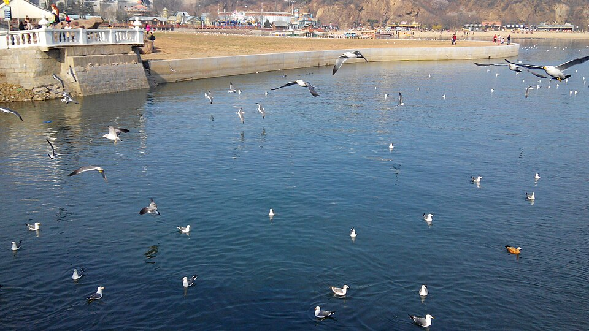
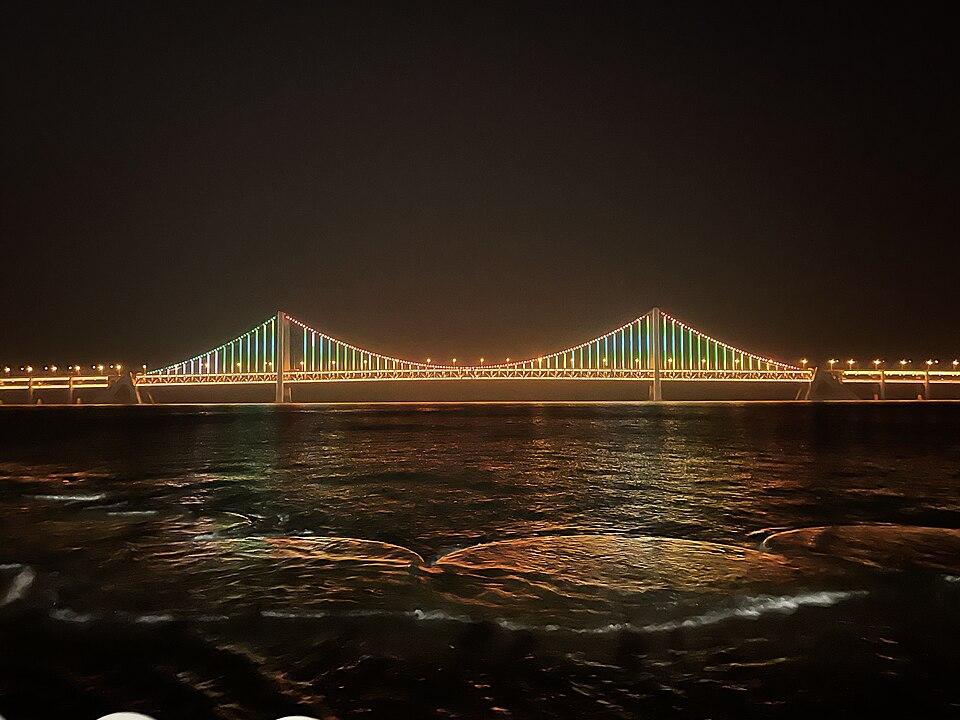
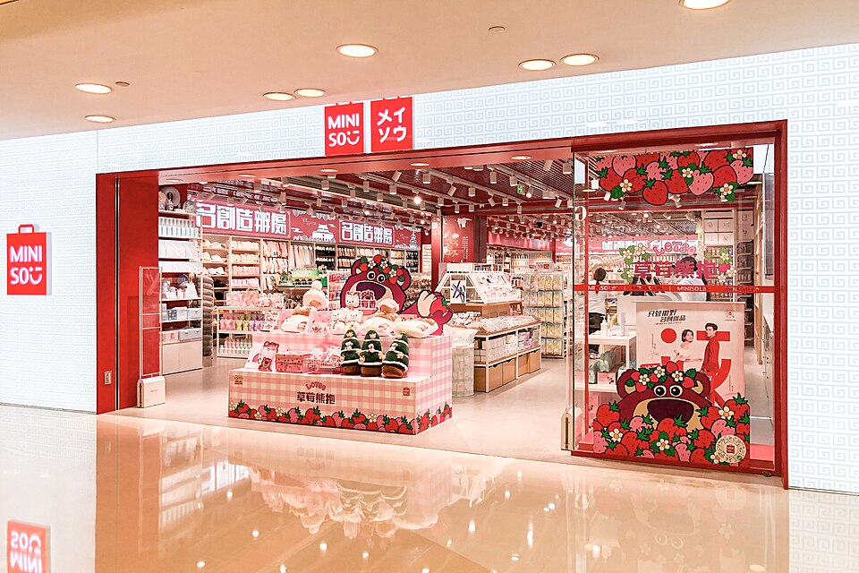
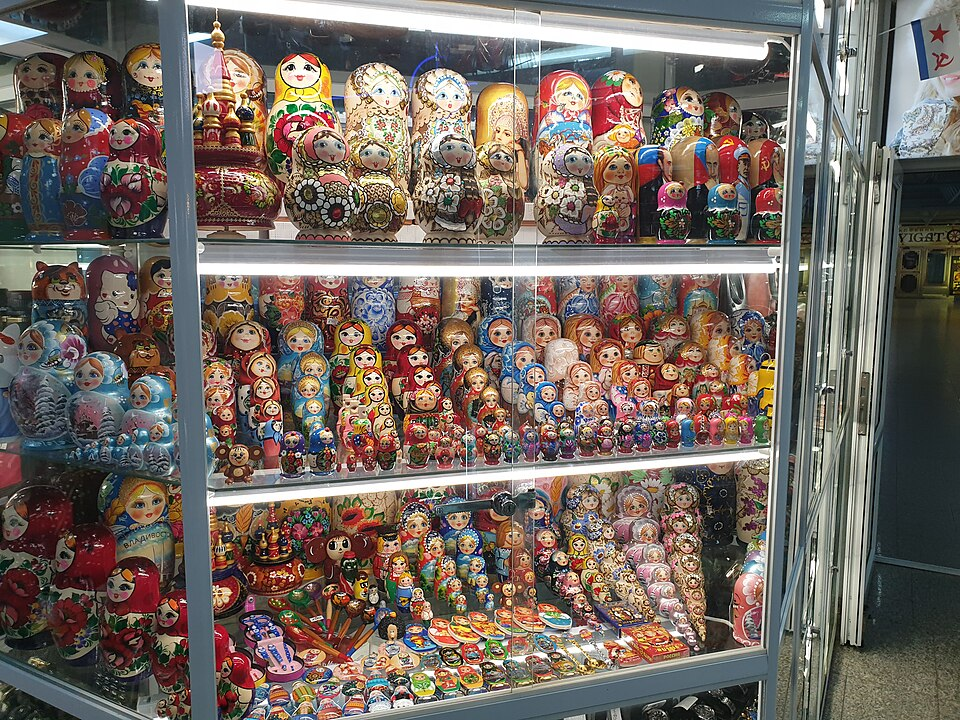
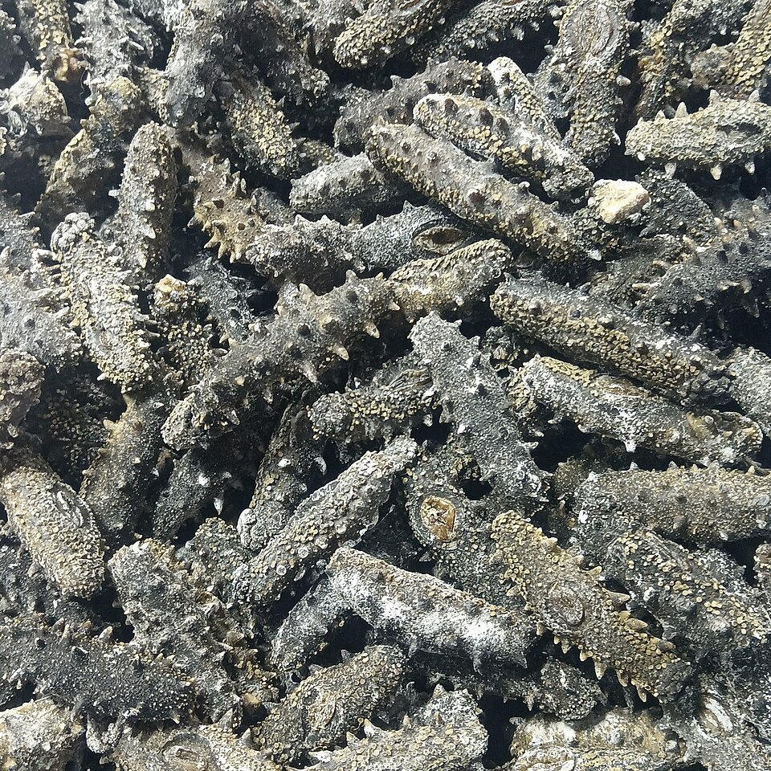
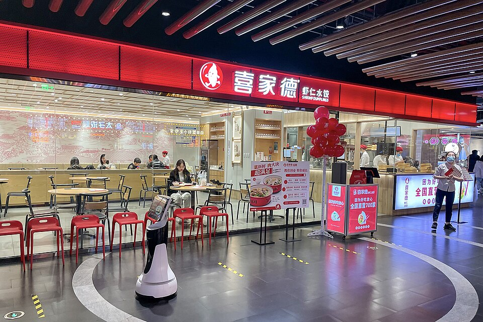
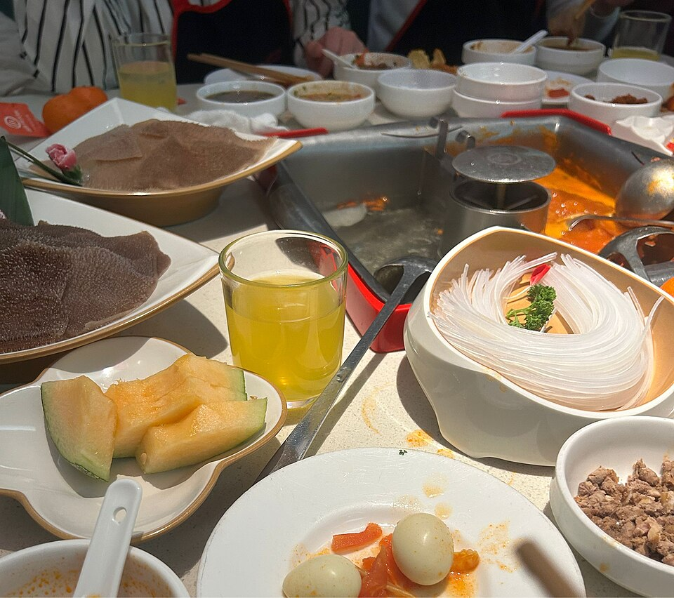
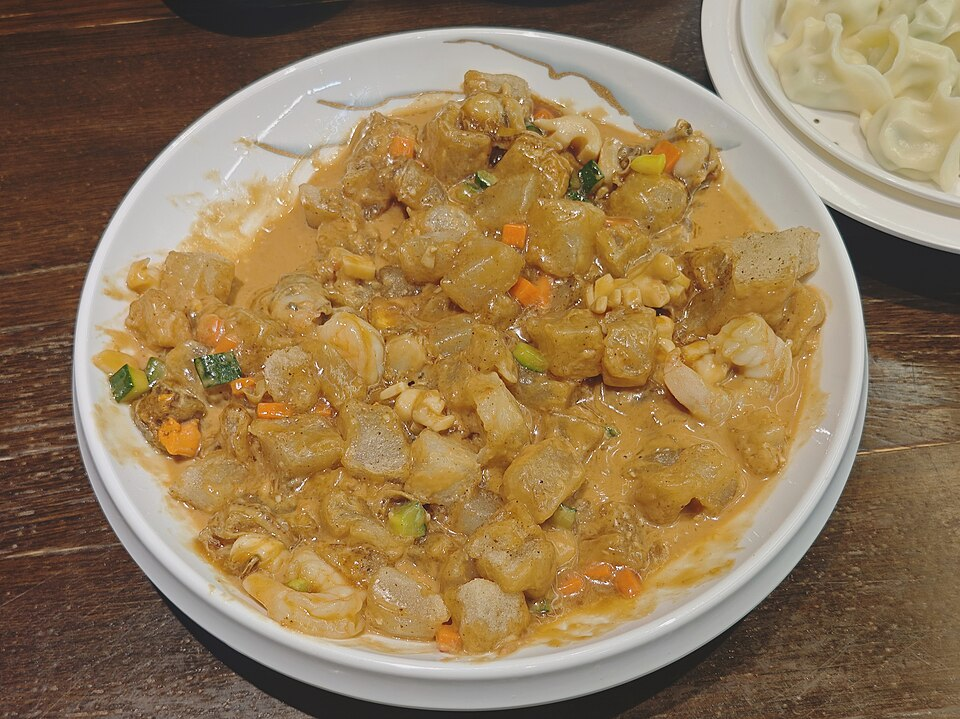
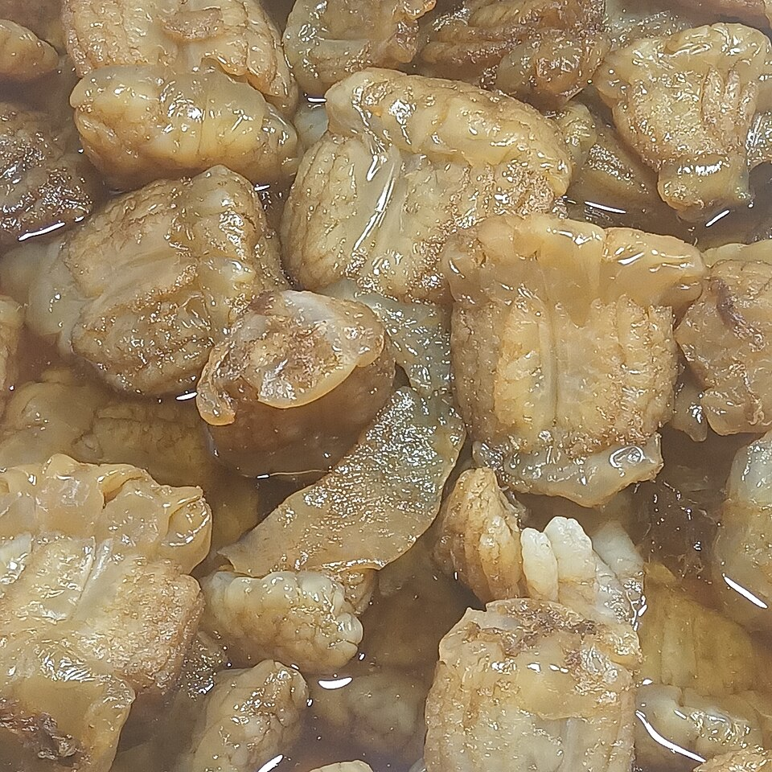

호텔 근처 매장은 지도 앱에서 '足疗'로 검색. 첫날은 발마사지 60~90분 정도로 가볍게.
11/28 토
해안도로 · 성해광장 · 슈퍼 미니소 · 전신 마사지
숙박: 샹그릴라
예보 전지난 2년 같은 날: 최고 3~11℃ / 최저 -1~1℃체감 최저 -5~-2℃ · 바람 최대 8m/s · 바람 강함
옷차림오전은 바닷바람, 오후는 실내
해안도로·라오후탄: 차 안에서 보는 구간이 많지만 전망 포인트에서 내릴 땐 패딩 지퍼까지.
성해광장: 바다 앞 초대형 광장이라 대련에서 바람이 가장 센 곳 중 하나입니다. 모자·장갑 다 꺼내고 15~20분만.
오후 쇼핑·저녁 이후: 매장·식당·마사지숍은 난방이 세서, 안에 입은 겹을 벗기 쉽게. 쇼핑백이 늘어나니 패딩은 가벼운 걸로.

빈하이루 해안도로사진: 燃玉 · CC BY-SA 3.0

라오후탄사진: 燃玉 · CC BY-SA 3.0

성해광장과 해상 대교사진: Yingxi120 · CC BY-SA 4.0

미니소 매장 (베이징)사진: N509FZ · CC BY-SA 4.0
09:30
호텔 조식 후 택시로 빈하이루 해안도로 → 라오후탄
호텔에서 라오후탄까지 차로 약 7km. 해안 절벽길을 따라 달리는 드라이브 코스로, 1시간 30분~2시간이 걸린다는 안내가 있습니다. 전망 포인트에서 잠깐씩 내려 사진만 찍고 이동하세요.
11:30
성해광장
해안도로 서쪽 끝, 호텔에서 차로 약 9km. 바다를 바라보는 큰 광장과 해상 대교 풍경. 바람 세면 사진만.
12:30
점심 (성해광장 근처)
맛집리스트의 '둘째 날 점심' 참고.
14:00
슈퍼 미니소 쇼핑 名创优品
택시로 시내로 돌아와 천진가 매장부터. 대형 매장(SUPER MINISO·MINISO LAND)은 캐릭터 굿즈 전시가 커서 1시간은 잡으세요. 대련 대형 매장 위치는 확인하지 못해, 가오더 지도에서 '名创优品'으로 검색해 간판에 SUPER MINISO가 붙은 매장을 고르세요. 이어서 승리광장 지하상가·천진가 구경.
16:30
호텔에서 짐 내려놓고 휴식
18:00
저녁: 하이디라오 훠궈 (또는 해산물 만두)
쇼핑 동선 근처 칭니와차오 매장. 주말이라 오후에 미리 예약하거나 번호표를 받아 두세요. 만두가 당기면 르웨밍·솽성위안의 삼치 만두(鲅鱼饺子)도 대련식입니다.
20:00
전신 마사지 90분
4명 동시 예약은 미리 전화나 호텔 프런트를 통해 잡아 두면 기다리지 않습니다.
11/29 일
여유 있는 오전 · 체크아웃 · 마사지 · 귀국
예보 전지난 2년 같은 날: 최고 9~15℃ / 최저 -1~6℃체감 최저 -4~4℃ · 바람 최대 7m/s · 바람 느껴짐
옷차림세 날 중 가장 풀릴 가능성이 큰 날
오전 산책: 낮 기온이 10℃를 넘는 해도 있었지만 아침은 영하 근처. 패딩은 그대로.
오후 실내: 마사지·쇼핑 위주. 패딩은 캐리어에 넣지 말고 들고 다니세요.
인천 도착(21:40경): 한국 11월 말 밤도 영하 근처일 수 있습니다(추정). 패딩은 기내에 들고 타세요.
09:00
느긋하게 조식 → 짐 정리
전날 산 물건을 캐리어에 정리. 액체류(소스 등)는 위탁 수하물로.
10:30
강만광장·호텔 주변 산책, 못 산 것 마저 사기
첫날 못 본 곳이 있으면 이 시간에. 미니소를 한 번 더 들러도 좋습니다(천진가까지 걸어서 약 20분).
12:00
체크아웃 → 짐 맡기기
체크아웃 시각은 예약 확인서에서 확인. 레이트 체크아웃이 되면 오후 짐 정리가 편합니다.
12:30
점심
마지막 끼니로 만두나 동북 요리.
13:30
발마사지 한 번 더 → 마트에서 간식·차
비행기 타기 전 발마사지 1시간으로 다리를 풀고, 호텔 근처 마트·백화점 식품관에서 마지막 간식 쇼핑.
16:30
호텔에서 짐 찾아 공항으로
일요일 오후 시내 정체를 감안해 넉넉히. 공항 도착 17:15 목표(출발 2시간 15분 전).
19:30
CZ675 출발 → 인천 21:40경 도착 (한국 시각)
남은 위안화 동전은 공항에서 쓰기 어렵습니다. 지폐는 다음 여행용으로 보관하거나 공항 편의점에서 정리하세요.
호텔 기준 위치
거리는 OpenStreetMap 경로 계산(OSRM) 기준입니다. 차 시간은 정체 없는 값이라 실제로는 더 걸립니다. 이름을 누르면 가오더 지도(高德地图)로 열립니다.
택시 기사에게 보여줄 호텔 주소 大连香格里拉大酒店 · 大连市中山区人民路66号 휴대폰에 캡처해 두세요. 대련 사람들은 영어보다 한자 주소를 훨씬 빨리 알아봅니다.
예상 비용 (1인)
항공·숙박 제외, 성인 1인 기준 위안(元). 택시·차량은 4명이 나눠 내는 것으로 계산했습니다. 원화 환산은 1元 ≈ 203원(2026-11-09, open.er-api.com) 기준이며, 실제 결제 환율과 다릅니다.
항목
근거
1인 (元)
합계
기념품·해삼처럼 큰 쇼핑은 빠져 있습니다. 마사지와 해안도로 택시 금액은 현지 가격을 확인하지 못한 추정치입니다. 중요한 예산 결정은 현지 최신 가격으로 교차 확인하세요.
쇼핑리스트
어디서 사면 좋은지 함께 적었습니다.
미니소 (참고: 베이징 매장)사진: N509FZ · CC BY-SA 4.0

마트료시카사진: LR0725 · CC BY-SA 4.0

대련 건해삼사진: Fumikas Sagisavas · CC0
한국 반입 주의. 생과일·생채소, 육류와 육가공품(소시지·육포·고기 들어간 만두 포함)은 검역 때문에 한국으로 가져올 수 없습니다. 건해삼 같은 수산물과 중국 약품은 품목·양에 따라 기준이 달라 구매 전 관세청·농림축산검역본부 안내를 확인하세요. 세관 관련 내용은 전문가(관세청 상담) 확인을 권장합니다.
맛집리스트
날짜·동선별로 묶고 점심/저녁/간식으로 나눴습니다. 가격은 1인 평균(人均) 기준이며, 출처 기사의 2026년 값입니다. 지점이 여러 곳인 체인이 많아 지도에서 가장 가까운 지점을 고르세요.

시지아더 매장 (참고: 다른 도시)사진: Windmemories · CC BY-SA 4.0

하이디라오 훠궈사진: Fumikas Sagisavas · CC0

삼선 먼쯔 (대련, 2025-11)사진: JacobLyu · CC BY-SA 4.0

대련 해파리 요리사진: Fumikas Sagisavas · CC0
주문 팁
해산물 식당은 수조에서 고르고 무게(斤 진=500g) × 단가로 계산합니다. 고른 뒤 무게와 총액을 계산기로 보여 달라고 하면 바가지를 피할 수 있습니다.
요리 한 접시 양이 많습니다. 4명이면 요리 4~5개 + 만두 1~2판이면 충분합니다.
사진 메뉴판이 없으면 번역 앱 카메라 번역(파파고 등)이 잘 통합니다.
주의사항 · 출발 전 할 일
무비자 입국은 2026-12-31까지 시행 중인 한시 정책입니다. 한국 일반여권은 관광 목적 최대 30일 무비자로 알려져 있습니다(한국경제 2025-11-03 보도, 여행사 안내 기준). 이번 여행은 기간 안이지만, 출발 전 주한중국대사관 공지로 한 번 더 확인하세요. 여권 유효기간은 6개월 이상 남아 있는 게 안전합니다.
결제: 알리페이·위챗페이
중국은 현금·카드보다 QR 결제가 기본입니다. 출국 전 알리페이(또는 위챗페이)를 깔고 한국 신용카드를 연결해 실명 인증까지 끝내 두세요. 택시·노점용 현금도 조금(인당 200~300元).
택시: 디디(DiDi)
알리페이 안의 디디 메뉴나 DiDi 앱으로 부를 수 있고, 목적지를 중국어로 입력하지 않아도 지도에서 고르면 됩니다. 결제도 앱으로 끝나 흥정이 필요 없습니다.
지도: 가오더(高德)·바이두
구글 지도는 중국에서 위치가 어긋나고 검색이 약합니다. 가오더 지도를 깔아 두면 이 페이지의 장소 링크도 바로 열립니다.
인터넷
구글·카카오톡·인스타그램은 중국 현지 와이파이·유심에서는 막히는 경우가 많습니다. 한국 통신사 로밍이나 '중국 로밍형' eSIM이 대체로 잘 된다는 후기가 많습니다(확인 필요).
시차·전기
중국은 한국보다 1시간 느립니다. 이 페이지의 시각은 모두 중국 시각. 콘센트는 220V로 한국 플러그가 대부분 그대로 꽂히지만 모양이 다른 구멍도 있어 멀티 어댑터 1개 권장.
항공편 재확인
CZ686 출발 11:20/11:25, CZ675 출발 19:14~19:34로 조회 사이트마다 조금씩 다르고, 일부 날짜 결항 기록도 있습니다. 출발 2~3일 전 중국남방항공 앱에서 시간과 터미널을 확인하세요.
이 페이지는 AI(Claude)가 공개 자료를 바탕으로 정리한 초안입니다. 운영시간·가격·입국 규정은 바뀔 수 있으니 중요한 결정 전에는 공식 안내로 교차 확인하세요.